1Welcome to Marco
Marco is the first Dual Hard Sync Synthesizer — a four-oscillator monophonic synth for iPad and iPhone (and any Apple Silicon Mac running iPad apps), with two independent hard-sync groups running in parallel.
This guide covers every panel and control. If you're new to synthesis, start at the top and read straight through. If you're looking for one specific feature, use the table of contents on the left to jump straight to it.
Marco is available two ways:
- Standalone app on iPad and iPhone — with a built-in keyboard, MIDI input and a Song Player of public-domain melodies.
- The Marco AUv3 plugin — drops into Logic Pro for iPad, GarageBand, AUM and other compatible AUv3 hosts.
The same build also runs natively on Apple Silicon Macs (M1 and later) via the App Store — install it like any iPad app and it opens in its own window on macOS.
Most of what's in this guide applies to both. Where things differ — for example, the Song Player only exists in standalone — that's flagged clearly in the section.
2System Requirements
- iPad running a current version of iPadOS. Tested on iPad Air M2.
- iPhone running a current version of iOS.
- Apple Silicon Mac (M1 or later) — the iPad app is available on the Mac App Store and runs natively in its own window.
- AUv3 host required when using The Marco plugin (e.g. Logic Pro for iPad, GarageBand, AUM and other compatible hosts).
3Getting Started
The fastest way to make a great sound is to let Marco make one for you.
- Open Marco (standalone) or load it as an AUv3 plugin in your host.
- Tap the dice button (🎲) in the top header to open the Random Preset Generator.
- Pick a category (Bass, Lead, Pad, etc.) or leave it on All.
- Tap Generate. A fresh preset rolls into place.
- Play a few notes — on the built-in keyboard (standalone) or from your MIDI controller / DAW.
- If you like the direction but want variation, tap Tweak to nudge the current preset rather than rolling a brand new one.
When you find a sound you love, save it to your User library — see 12. Presets.
4Interface Tour
A quick walkthrough of where everything lives.

Top Header
From left to right across the top of the screen:
- MARCO logo (top-left) — the multi-coloured wordmark; purely decorative.
- Pitch / frequency readout (standalone) — shows the most recently played note and its frequency in Hz.
- Preset selector (centre) — the current preset name with < and > arrows on either side. Tap the arrows to step through presets one at a time, or tap the preset name itself to open the full Preset Browser (see 12. Presets).
- Randomiser button (orange) — labelled with the current Base Preset Source (e.g. Randomiser — All, Randomiser — Bass). Tap to open the Random Preset Generator, where you can change the Base Preset Source as well as choose which oscillators and parameters get randomised (see 13. Random Preset Generator).
- Keyboard toggle (standalone) — shows or hides the built-in keyboard at the top of the screen.
- ⚙️ Settings cog (top-right) — opens the App Preferences dialog (see 16. App Preferences).
Toolbar
Just below the header you'll find horizontal tabs to switch between modulation panels:
- Osc — the four oscillators (waveform, volume, fold, detune, sync mode).
- Vol Env — volume (VCA) envelope per oscillator.
- Filt Env — filter envelope per oscillator.
- Filter — filter type and settings per oscillator.
- Cut LFO — filter cutoff LFO.
- Vol LFO — volume LFO.
- Fold LFO — wavefold LFO.
- Pitch LFO — pitch LFO.
- Glide — portamento between notes.
- Master — full output chain: gain, drive, compressor, delay, reverb, stereo, limiter.
Master Strip
Just above the four oscillator columns, the Master Strip gathers your global controls and quick-access dialog buttons. From left to right:
- ? Hints button (far left) — opens a context-aware Hints dialog for whatever tab you're currently on. The button changes colour to match the active tab. See Hints — the ? button below.
- Per-Osc / Linked toggle — sets whether the current tab's module runs as four independent per-oscillator copies or one shared instance (see Per-Osc and Linked Modes). It appears on every modulation tab, but not on the Oscillator tab (always per-oscillator) or the Master tab (always linked).
- Output meter — a horizontal level meter showing the master output. Green is healthy, yellow is approaching clip, red means you're clipping; pull down the Gain if you see red.
- Gain — overall master output level.
- Scope icon — opens the Waveform Scope (see 14. Scope).
- XY Pad icon — opens the expressive XY control surface (see 15. XY Pad).
- ◀ 🎲 ▶ Dice & history chevrons — the dice is a quick-generate trigger (one tap rolls a new preset using the Base Preset Source and Styles set in the Randomiser, without opening the dialog). A small live label under the dice reads Category.Styles — telling you what the next roll will produce before you tap it (see the dice label). The orange chevrons either side step back and forward through your last 30 randomised sounds (see Random Preset History).
- DUAL HARD SYNC — cycles through valid Dual Hard Sync combinations (see 6. Dual Hard Sync).
The Four Oscillator Columns
The main area shows four oscillator columns, each in its own colour: Osc 1 Osc 2 Osc 3 Osc 4. The colour follows that oscillator everywhere in Marco — including the Scope, LFO panels, and Preset Browser.
Per-Oscillator Wand Buttons
Every tab except Master has a small wand icon in each oscillator's column header. Tapping it runs a Per-Oscillator Tweak — a surgical randomisation that only re-rolls the parameters visible on the current tab for that one oscillator.
- Wand on Osc 2's Filter tab → re-rolls Osc 2's filter type, cutoff, resonance, envelope amount and key tracking. Nothing else changes.
- Wand on Osc 1's Vol Env tab → re-rolls just Osc 1's ADSR.
- The wand is disabled when that section's ON/OFF toggle is off (nothing to re-roll).
It's the fastest way to add a fresh idea to a sound without touching everything else. Full details in 13. Random Preset Generator.
Per-Osc and Linked Modes
One concept appears everywhere in Marco, so it's worth learning straight away: most modulation panels can run in either Per-Osc or Linked mode. You toggle between the two using the button next to each panel's title — it shows the current mode (PER-OSC or LINKED).
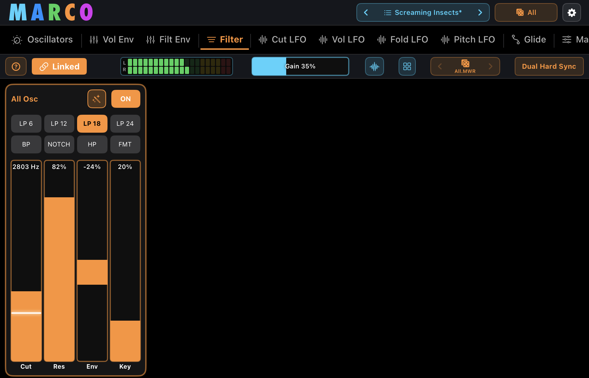
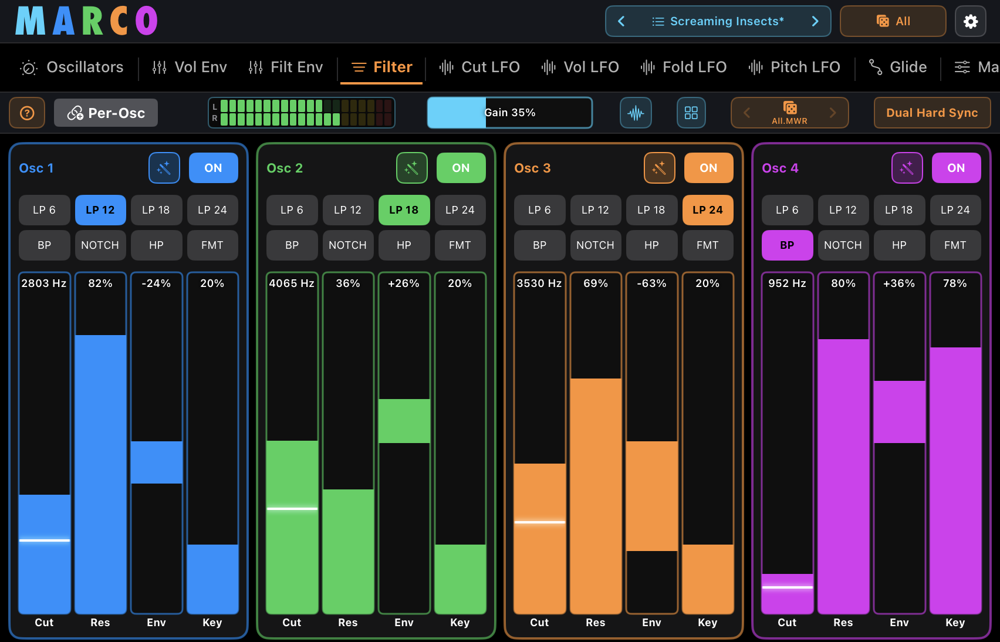
Per-Osc mode
Each of the four oscillators gets its own independent copy of that module. So in Per-Osc Filter mode you might run a 24dB low-pass filter wide open on Osc 1, a swept notch on Osc 2, a band-pass on Osc 3 and a formant filter on Osc 4 — all at the same time. Each oscillator's controls are colour-coded so you always know which oscillator you're editing.
Linked mode
All four oscillators share a single instance of that module. One set of controls drives every oscillator at once. It's lighter on CPU, simpler to dial in, and often exactly what you want when you're after a cohesive sound rather than four contrasting voices.
Per-Osc and Linked exist for the following panels: Vol Env, Filt Env, Filter, Cut LFO, Vol LFO, Fold LFO, Pitch LFO, and Glide. The Oscillators panel itself is always per-oscillator by nature — each oscillator has its own waveform, volume, fold, detune and sync mode. The Master tab (drive, compressor, delay, reverb, stereo, limiter) is always linked — it processes the mixed output of all four oscillators.
When you switch a module from Per-Osc to Linked, Marco uses Osc 1's settings as the shared source — the other oscillators' settings are replaced.
A special case: Filter, Filt Env and Cut LFO
The Filter Envelope and Cutoff LFO both modulate the Filter's cutoff — they share a target. Because of this, their Per-Osc / Linked modes are tied to the Filter's mode by a simple rule:
In practice:
- If the Filter is in Linked mode (one shared filter), then the Filt Env and Cut LFO must also be in Linked mode. One envelope and one LFO drive the single shared filter.
- If the Filter is in Per-Osc mode (four independent filters), then the Filt Env and Cut LFO can be in either mode. Set them to Linked and one envelope/LFO broadcasts to all four filters; set them to Per-Osc and each filter has its own dedicated envelope and LFO.
The same principle applies between the Filter and the Cut LFO directly — wherever one module modulates another, the modulator can have fewer instances than its target, but never more.
You don't need to manage any of this yourself. Marco adjusts the related modules dynamically as you work — no dialogs, no warnings, no blocked actions. If you switch the Filter to Linked while the Filt Env or Cut LFO are in Per-Osc, they'll quietly collapse to match. Likewise, switching a modulator to Per-Osc while its target is Linked will expand the target as needed. The interface always keeps the configuration valid for you in the background.
A Consistent Interface
Marco's UI is designed so that learning any one panel teaches you most of the others. A few things to notice as you explore:
- Oscillator colours follow everywhere. Osc 1 is always blue, Osc 2 green, Osc 3 orange, Osc 4 magenta — in every panel, the Scope, the Preset Browser. Glance at any control and you instantly know which oscillator it belongs to.
- Same layout, repeated. All four LFO panels share the same control structure (Rate / Range / Fade / Phase reset / Clock sync). Both envelopes share the same ADSR layout. Learn one, you can drive the others without re-reading anything.
- Modes work the same way. The PER-OSC / LINKED toggle is in the same position on every panel that has it. The On/Off button is in the same position on every oscillator column.
- Modulation is visible. The white indicator lines on parameter sliders show exactly which parameters are being moved by an LFO and by how much — so when something changes in the sound, you can always see why.
The payoff: even Marco's deepest features stay easy to navigate, because the colour-coding and consistent layout always tell you what you're looking at.
Hints — the ? button
Every synth tab has its own built-in help, so you never have to leave Marco to look something up. Tap the ? button at the far left of the Master Strip to open the Hints dialog for whatever tab you're currently on. The button takes on the colour of the active tab so it always feels part of where you are.
Each Hints dialog has three parts:
- A summary of what the current tab does.
- Controls — a plain-language description of every slider and toggle on that tab.
- Tips & Recipes — worked examples you can dial in straight away (e.g. "Acid bass", "Living pad", "Trance gate").
Hints are available on every panel — Oscillators, Vol Env, Filt Env, Filter, Cut LFO, Vol LFO, Fold LFO, Pitch LFO, Glide and Master — plus a dedicated entry for the Random Preset Generator, reached via the ? button in that panel's own header. Tap outside the dialog or the × in its header to dismiss it. The Hints system is identical in the standalone app and the AUv3 plugin.
5The Oscillators
Each of Marco's four oscillators is fully independent — its own waveform, volume, fold, detune and pulse width.
Each column carries, top to bottom: the six waveform buttons, the octave selector (−3 to +3), the two sync-mode buttons, and the Vol / Fold / Det / PWM sliders. The wand icon re-rolls just this oscillator's settings, and the white lines inside the sliders show any live LFO movement.
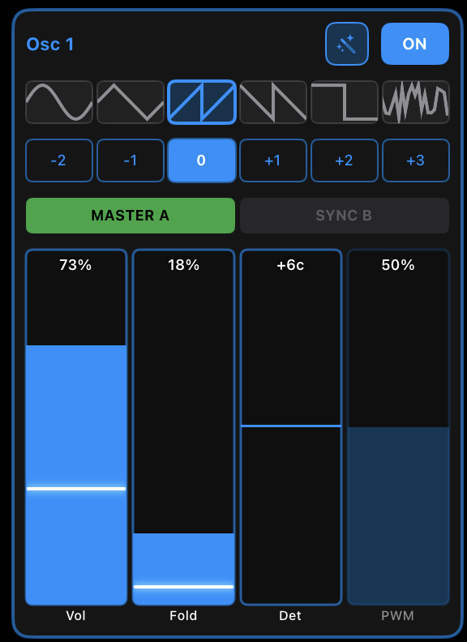
5.1 Waveforms
Six waveforms are available per oscillator:
| Waveform | Character |
|---|---|
| Sine | Pure, smooth tone. Great as a sub bass or for additive blending. |
| Triangle | Hollow, mellow. A softer alternative to sine with more upper harmonics. |
| Saw | Bright, buzzy. The classic synth lead and bass waveform. |
| Ramp | Reverse saw. Same harmonic content as Saw but with different sync and phase behaviour. |
| Pulse | Square / pulse wave. Pulse width is controlled by the PWM parameter. |
| Noise | White noise. Useful for percussive elements, hi-hats, wind / breath layers. Pitch, octave, detune and pulse width have no effect on Noise. |
5.2 Per-Osc Controls
Underneath the waveform row, each oscillator has four parameter sliders:
| Slider | Range | What it does |
|---|---|---|
| Vol | 0–100% | Volume of this oscillator in the master mix. |
| Fold | 0–100% | Wavefolding amount. Higher values fold the waveform back on itself, adding harmonics by folding the waveform back on itself. |
| Det | −100 to +100 cents | Fine pitch offset against the other oscillators. |
| PWM | 10–90% | Pulse-width duty cycle. Only active when the waveform is Pulse. |
Each oscillator also has an ON / OFF button at the top right of its column. Turning off an oscillator removes it from the mix entirely — it consumes no CPU when off.
5.3 Octave & Pitch
Between the waveform selector and the parameter sliders, each oscillator has an octave selector: −3 −2 −1 0 +1 +2 +3. Tap to shift this oscillator's playing range up or down by full octaves relative to the played note.
Combine octave with the Det (detune) slider for fine pitch offsets between oscillators — this is the foundation of fat, layered sounds.
6Dual Hard Sync
Dual Hard Sync is what makes Marco different from every other iOS synth. It's worth understanding properly.
What's hard sync?
In classic synthesis, "hard sync" is when one oscillator (the master) forces another oscillator (the synced) to restart its waveform cycle every time the master completes a cycle. The synced oscillator's pitch becomes locked to the master's, but its harmonic content changes dramatically — producing characteristic glassy, aggressive, sweeping timbres.
What makes Marco's sync different?
Most synths offer one master/sync pair. Marco runs two independent hard-sync groups in parallel — group A and group B. Any oscillator can be assigned to either group, or left independent.
Sync mode buttons
Underneath each oscillator's parameter row, you'll see two sync mode buttons. The choices are:
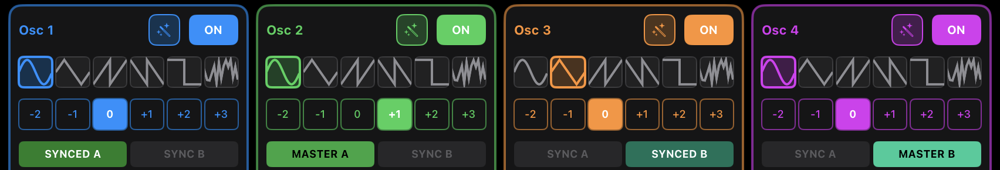
| Mode | Meaning |
|---|---|
| Off | This oscillator runs independently, ignoring sync. |
| Master A | This oscillator drives sync group A. |
| Sync A | This oscillator is synced to Master A. |
| Master B | This oscillator drives sync group B. |
| Sync B | This oscillator is synced to Master B. |
The DUAL HARD SYNC button
In the master strip at the top of the page, the DUAL HARD SYNC button cycles through every valid sync configuration. One tap re-rolls the sync assignments across all four oscillators — the fastest way to hear what your current preset can sound like with different sync relationships.
7Envelopes
Envelopes shape how a parameter changes over the duration of a note. Marco has two envelopes per oscillator: the Volume Envelope and the Filter Envelope.
7.1 Volume Envelope (Vol Env)
The Volume Envelope controls how loud the oscillator is from the moment a note is pressed until after it's released. The per-oscillator Hold (latch) and Drone buttons sit across the top, alongside the curve selector (Lin / Exp / Soft / Med / Hard), with the standard ADSR sliders below.
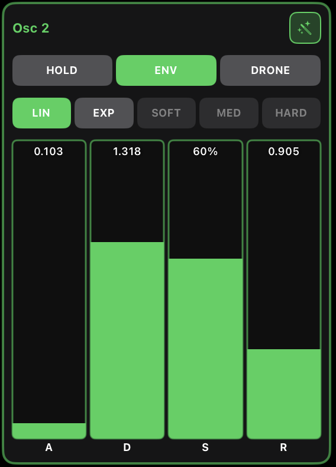
Standard ADSR layout:
| Stage | Range | What it does |
|---|---|---|
| Attack | 0–5 s | Time to reach full volume after note-on. Fast = percussive; slow = pad-like. |
| Decay | 0–5 s | Time to fall from the attack peak down to the sustain level. |
| Sustain | 0–100% | Volume level held while the note is pressed. |
| Release | 0–5 s | Time to silence after note-off. |
| Exponential | On/Off | Use exponential rather than linear envelope curves. |
| Exp Rate | 0.1–10 | Steepness of the exponential curve. |
| Drone Mode | On/Off | When on, the oscillator sustains indefinitely without needing a held note — useful for drones, sustained pads, and continuous textures. Bypasses the normal ADSR gate behaviour. |
Vol Env can be set per-oscillator (each oscillator has its own envelope) or linked (one envelope drives all four). Toggle this at the top of the Vol Env panel.
Hold (Latch)
The Vol Env tab also carries a per-oscillator Hold (latch) control. When latched, the oscillator continues sounding after the MIDI note is released. Use this for drones, sustained pads or to layer a held tone against newly-played notes. Because Hold is per-oscillator, you can latch a sub layer while the lead oscillator still responds normally to your playing.
7.2 Filter Envelope (Filt Env)
The Filter Envelope shapes the filter cutoff over time, independent of the volume envelope. Same ADSR layout and curve options as the Volume Envelope, but without the Hold and Drone buttons.
The depth of the filter envelope's effect on the cutoff is set by the Env slider in the Filter panel — see 8. Filters.
Filt Env can be per-osc or linked, just like Vol Env.
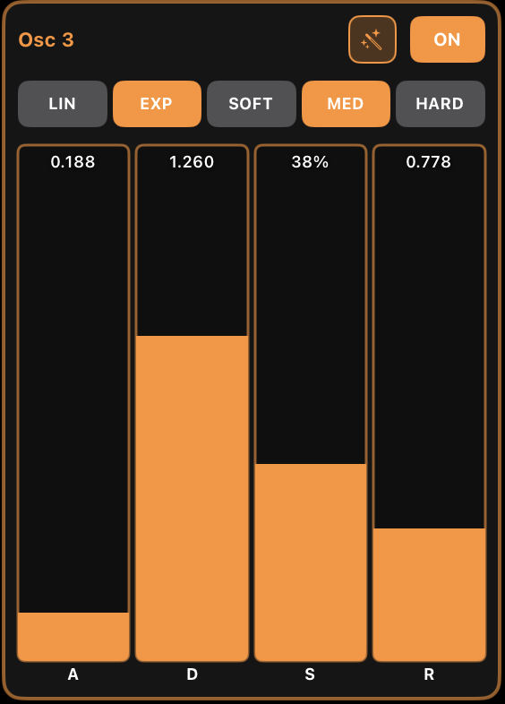
8Filters
A state-variable filter with eight modes, applied per-oscillator or linked across all four.
The filter-type buttons (LP 6 / LP 12 / LP 18 / LP 24 / BP / Notch / HP / Formant) sit at the top of the panel; below them are the Cut, Res, Env and Key sliders detailed in the tables below.
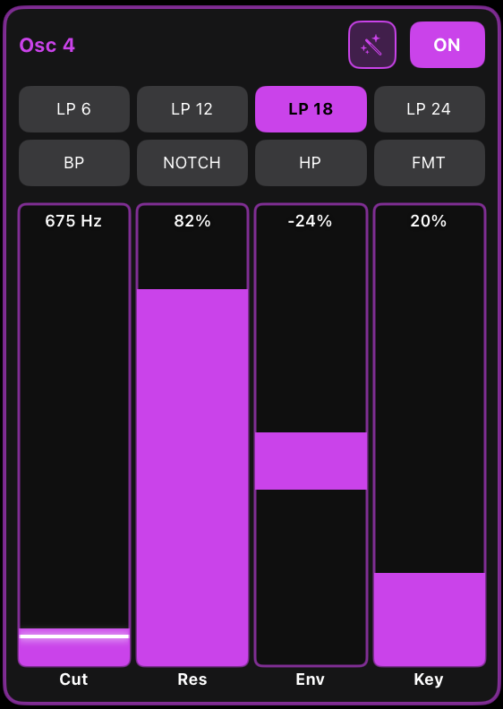
Filter types
| Type | Character |
|---|---|
| LP 6 | Low-pass, 6dB/octave slope. Gentle, transparent darkening. |
| LP 12 | Low-pass, 12dB/octave. Classic synth low-pass, moderate squelch. |
| LP 18 | Low-pass, 18dB/octave. Deeper cut, more pronounced resonance. |
| LP 24 | Low-pass, 24dB/octave. Sharp, aggressive — the Moog-style ladder slope. |
| BP | Band-pass. Removes lows and highs, leaving a tunable mid-band. |
| Notch | Notch filter. Cuts a narrow frequency band, useful for phasing/sweep effects. |
| HP | High-pass. Removes lows below the cutoff. Tightens bass-heavy sounds. |
| Formant | Formant filter. Produces vowel-like resonances ("ah", "oh", etc.). |
Filter parameters
| Control | Range | What it does |
|---|---|---|
| Cutoff | 20 Hz – 20 kHz | Cutoff frequency, log-scaled. |
| Resonance | 0–100% | Filter Q. At high settings, can self-oscillate. |
| Env Amount | −100% to +100% | How much the Filter Envelope opens (positive) or closes (negative) the filter from rest. |
| Key Tracking | 0–100% | How much the cutoff follows the played note's pitch. 0% = static; 100% = 1:1 tracking. |
| Enabled | On/Off | Bypass the filter entirely for this oscillator. |
Filters can be set per-oscillator or linked across all four.
9LFOs (Low-Frequency Oscillators)
LFOs are slow modulators that move a parameter up and down over time — think of them as automated knob-twiddling. Marco has four LFOs, each targeting a different parameter.
Shared LFO controls
Every LFO has the same set of base controls:
| Control | Range | What it does |
|---|---|---|
| Shape | Sine, Triangle, Saw, Ramp, Square | LFO waveform. |
| Rate | 0.1–20 Hz | LFO speed — or musical division when Sync is on. |
| Min Level | 0–100% | Lower bound of the modulation range. |
| Max Level | 0–100% | Upper bound of the modulation range. Together with Min Level, sets where the LFO swings between. |
| Gate | On/Off | When on, the LFO restarts on each note. When off, the LFO free-runs. |
| Phase Offset | 0–360° | Starting phase when Gate is on. Any angle, not just the four cardinal positions. |
| Fade In | 0–5 s | Gradual onset — the LFO ramps up to full depth over this time after note-on. |
| Sync | On/Off | Locks the LFO rate to host tempo (or the standalone's BPM). |
| Sync Division | Musical divisions | Rate when synced (e.g. 1/4, 1/8, 1/16T, 1/8D, etc.). |
All LFOs can be per-oscillator (each oscillator gets its own independent LFO) or linked (one LFO drives all four).

9.1 Cutoff LFO (Cut LFO)
Modulates the filter cutoff over time. The classic "wah-wah" sweeping effect.
9.2 Volume LFO (Vol LFO)
Modulates the oscillator volume — produces tremolo (amplitude modulation).
9.3 Wavefold LFO (Fold LFO)
Modulates the wavefolding amount. Produces evolving harmonic complexity — the fold parameter is one of Marco's strongest character controls.
Its layout is shared by all four LFOs: the shape buttons and Sync / Gate toggles across the top, then the Div (rate), Range, Fade and Phase sliders — so learning this panel teaches you the Cutoff, Volume and Pitch LFOs too.
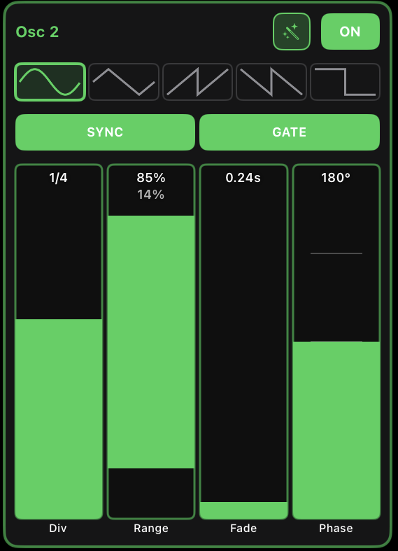
9.4 Pitch LFO
Modulates the oscillator pitch — produces vibrato (frequency modulation). Includes a dedicated vibrato mode for natural-sounding pitch movement.
It uses the same control layout as the other LFOs (shape, Sync / Gate, Div, Range, Fade and Phase), so a slow triangle gives gentle vibrato while faster rates and wider ranges push into siren and warble territory.
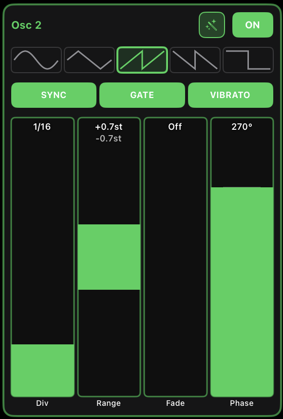
10Glide
Glide (portamento) makes the pitch slide smoothly from one note to the next instead of jumping. Essential for expressive leads and 303-style basslines.
The panel sets the slide Time, its Curve, whether glide is Legato-only, and a Max Range cap — and like most modules it can run per-oscillator or linked.
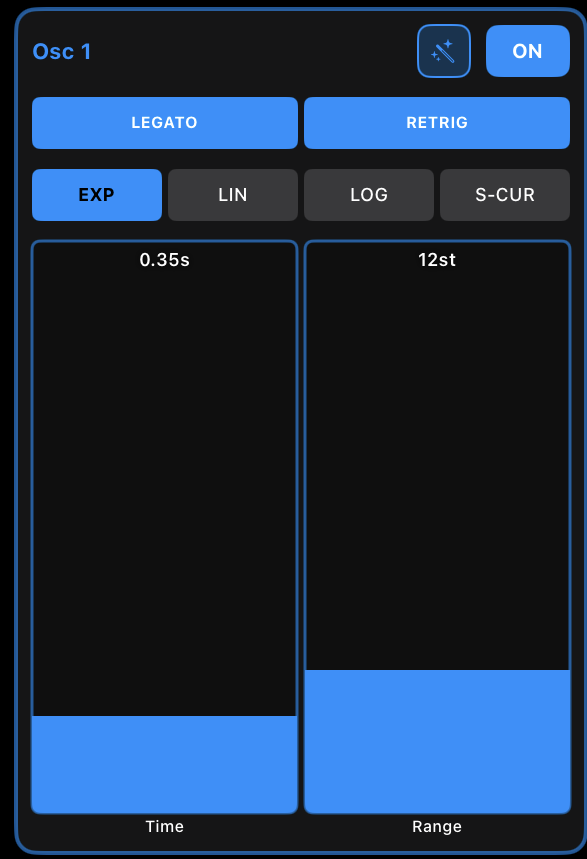
Glide controls
| Control | Range | What it does |
|---|---|---|
| Enabled | On/Off | Turn glide on or off. |
| Time | 0.01–2.0 s | Duration of the pitch slide between two notes. |
| Curve | Exp / Linear / Log / S-curve | Shape of the pitch transition. |
| Legato Only | On/Off | When enabled, glide only happens when notes overlap (true legato playing). Staccato notes jump as normal. |
| Max Range | 0–48 semitones | Caps the largest interval glide will cover. 0 = unlimited (slide any distance); useful for keeping wide jumps snappy while small intervals slide smoothly. |
Glide can be set per-oscillator or linked. Per-osc glide is one of Marco's most expressive features — for example, gliding only Osc 1 while Osc 2 jumps creates a "rubber-band" detuning effect.
11Master Tab
The Master tab is Marco's full output processing chain — gain staging, drive, dynamics, time-based effects, stereo imaging and limiting. Every section processes the combined mix of all four oscillators.

Each section (except Stereo) has its own ON / OFF toggle. When a section is off, its controls grey out and the signal passes through untouched.
11.1 Gain Controls
Input and output gain meters and sliders sit at the top of the Master tab. Use the input gain to set how hot the signal is driving the chain (especially relevant for Drive and Compressor); use the output gain to set the final master level.
11.2 Drive
Saturation / distortion. Adds warmth, grit or destruction depending on type and amount.
| Control | What it does |
|---|---|
| Type | Saturation curve — Soft, Hard, Tube or Fold. |
| Drive | Amount of saturation (0–100%). |
| Tone | Brightness / darkness of the distorted signal (0–100%). |
| Mix | Dry / wet blend (0–100%). |
11.3 Compressor
Dynamics processing to even out peaks and add density.
| Control | Range | What it does |
|---|---|---|
| Threshold | −60 to 0 dB | Level above which compression begins. |
| Ratio | 1:1 to 20:1 | How aggressively signal above threshold is compressed. |
| Attack | 1–300 ms | How quickly the compressor engages after the signal exceeds threshold. |
| Release | 10–1000 ms | How quickly the compressor releases after the signal falls back. |
| Auto Gain | On/Off | Automatic makeup gain to compensate for the level reduction. |
| GR Meter | — | Visual gain-reduction indicator. |
11.4 Delay
Digital delay with optional tempo sync.
| Control | What it does |
|---|---|
| Time / Div | Delay time in seconds (0.05–1.0 s) or musical division when Sync is on. |
| Feedback | How much delayed signal feeds back into the input (0–95%). |
| Mix | Dry / wet blend (0–100%). |
| BPM | Tempo for sync mode (40–240). Standalone only — the AUv3 plugin uses host tempo. |
| Sync | Toggle tempo-synced delay timing. |
Sync divisions (fastest to slowest): 1/32, 1/16T, 1/16, 1/8T, 1/16D, 1/8, 1/4T, 1/8D, 1/4, 1/4D, 1/2, 1/1, 2 Bars, 4 Bars.
11.5 Reverb
FDN (Feedback Delay Network) reverb with configurable quality. The number of internal delay lines used by the reverb is set globally in App Preferences → Performance Settings.
| Control | What it does |
|---|---|
| Damping | High-frequency absorption preset — DARK, WARM, CLEAR, BRIGHT. |
| Mix | Dry / wet blend (0–100%). |
| Decay | Reverb tail length (0–100%). |
| Size | Room size scaling (0.2× to 2.0×). |
| Pre-Delay | Time between the dry signal and the first reverb reflection (0–100 ms). |
11.6 Stereo
Stereo imaging and spatial processing. Always active — there is no on/off toggle. Sits in the chain immediately after the Reverb.
| Control | Type | What it does |
|---|---|---|
| Width | Slider | Stereo spread via allpass decorrelation (0–100%). Always available. |
| Drift | Slider | Slow stereo movement — a 0.3 Hz LFO gently pans the image side to side (0–100%). |
| FOLD | Button | Asymmetric tanh saturation (left ×1.15, right ×0.85) that drives the two channels differently, producing harmonic stereo divergence and a wider, more characterful image. |
| B.MONO | Button | Bass Mono — sums frequencies below ~200 Hz to mono, keeping the low end coherent for production. |
| SAFE | Button | Mono compatibility — reduces the stereo side signal by 40% so the mix translates well to mono playback. |
Signal flow: Width decorrelator → Drift → Fold → Bass Mono → Safe.
11.7 Limiter
Brick-wall limiter at the end of the chain. Catches any peaks before they leave Marco.
| Control | Range | What it does |
|---|---|---|
| Ceiling | −12 to 0 dB | Maximum output level the limiter will allow through. |
| Release | 1–500 ms | How quickly the limiter releases after a peak. |
| GR Meter | — | Visual gain-reduction indicator. |
11.8 Master Presets
Marco's Master chain has its own preset system, separate from voice presets. You can swap the entire effects chain (Drive, Compressor, Delay, Reverb, Stereo, Limiter settings) independently of the sound you're playing — useful when you want to keep the voice you've designed but try a completely different sonic space.
The Master nav button
Master presets are driven from the Master nav button — a green pill sitting next to the main preset selector. It shows the name of the active Master preset, and like the voice-preset selector it has < and > chevrons for stepping through Master presets one at a time, plus tap-to-browse, save and overwrite.
Edit tracking
The Master nav button keeps you honest about whether what you're hearing still matches the named Master preset:
- Name* (asterisk) — appears after the active Master preset's name as soon as you change any Master tab slider or button. It clears when you navigate with the chevrons, pick a preset in the browser, save, or overwrite.
- "Custom" — replaces the Master preset name whenever you load a regular (voice) preset. Voice presets carry their own baked-in effects, so loading one means the previously-shown Master preset no longer describes what's playing. Loading or saving a Master preset replaces "Custom" with that preset's name again.
- "Custom*" — the two states combine: edit a Master control after loading a voice preset and the button reads Custom*.
12Presets
Marco ships with 100+ factory presets and full support for saving, organising and sharing your own.
Preset categories
- All — every preset in the library.
- Favourites — anything you've starred.
- Signature — curated presets that showcase Dual Hard Sync.
- Artists — presets contributed by featured artists.
- Basic — simple, clean starting points.
- Bass — sub, mid, acid, sub-octave basslines.
- Lead — solo and melodic voices.
- Pad — slow, evolving sustained sounds.
- Keys — keyboard / piano / mallet-style sounds.
- FX — sound effects, hits, noise textures, atmospheres.
- Drone — sustained, evolving, no-key-off sounds.
- User — presets you've saved yourself.
The Preset Browser
Tap the preset name in the top-centre of the screen to open the Preset Browser. Categories are on the left, preset names on the right. Tap a star to add to favourites; tap a preset name to load it. You can also step through presets one at a time using the < and > arrows on either side of the preset name without opening the browser.
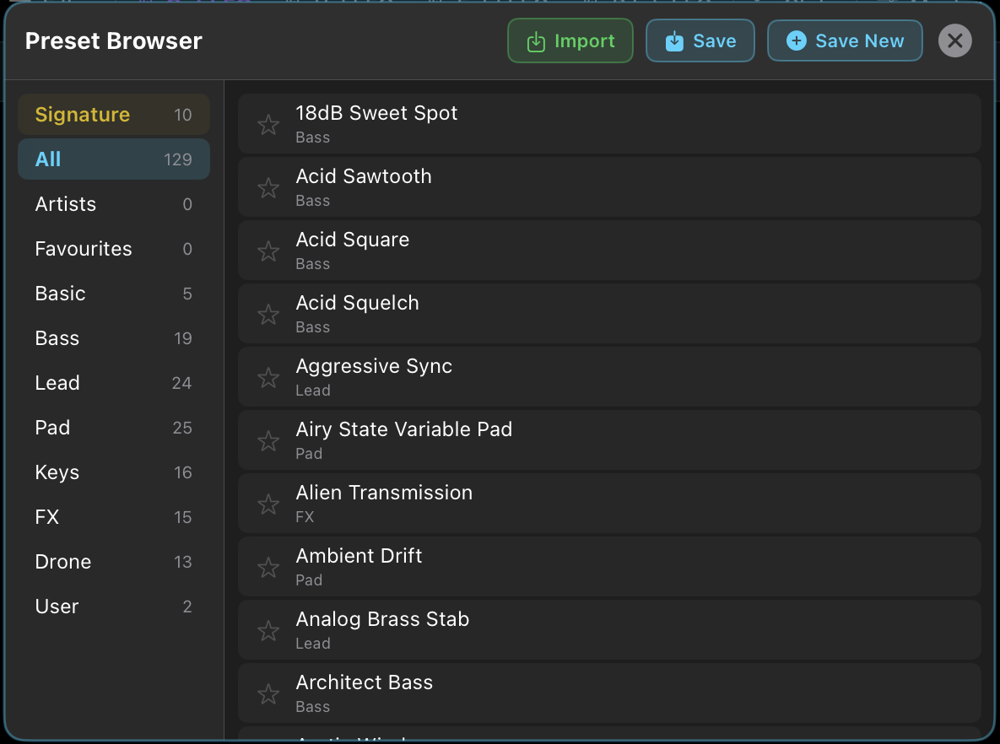
Save vs Save New
Marco distinguishes between updating an existing user preset and creating a fresh one:
- Save — overwrites the currently active user preset in place. If the active preset is a factory preset or "Random", Save automatically falls back to Save New behaviour (i.e. it never overwrites factory content).
- Save New — always prompts for a name and creates a brand new user preset, leaving the active one untouched.
Import & Export
The Preset Browser supports importing presets shared by other users (or sent to you via the website) and exporting your own to share. Files are small JSON snippets containing the preset name and parameter values — see 19. Sharing Presets.
13Random Preset Generator
Marco's randomisation system is musical, not chaotic. It's designed around a principle of happy accident and discoverability — every roll should produce something you can actually use, while still surprising you.
Every Generate combines three things: a Style (Mild / Wild / Recipe — pick any), a Base Preset Source (which category to draw from), and an optional set of selective toggles (which oscillators and controls are allowed to change). The Style comes first — it sets the whole character of the roll — so that's where this section starts.

13.1 Styles — Mild, Wild & Recipe
Three Style pills at the top of the Random Preset panel decide how each roll is built. Styles are multi-select — enable any combination, and each press of Generate (or the dice) picks one of your enabled Styles at random for that roll.
| Style | What it does |
|---|---|
| Mild | Small, musical mutations around the source preset's character. Best for refining a patch you already like — keeps the vibe, varies the details. |
| Wild | Aggressive, broad-spectrum randomisation with power-curve distributions. Wider range, more surprises — ideal for discovery sessions. |
| Recipe | Picks from 35 codified sonic archetypes (think "Moog Lead", "Acid 303", "Glass Pad", "Riser") and builds a coherent patch inside that archetype's design constraints. The most curated Style — usable patches out of the box. |
With more than one Style enabled, Marco picks one at random for each roll — so "Mild + Recipe" alternates between curated and gentle-mutation results. An empty selection is treated as all three.
13.2 Three ways to randomise
The Style governs Generate, but Marco actually has three distinct randomisation entry points, each suited to a different stage of sound design:
| System | Where | What it does |
|---|---|---|
| Generate | "Generate" button in the Random Preset panel, or the 🎲 dice button on the main toolbar | Rolls a completely new sound, using your active Style (see 13.1 Styles) and selected category. Produces a fresh sound that still belongs to the category you chose. The toolbar dice does exactly the same thing as the panel's Generate button. |
| Tweak | Wand button in the Random Preset panel | Mutates the currently loaded sound. Only affects the oscillators and parameters you've toggled on in the panel. Uses wide, default ranges (no category-specific tuning). |
| Per-Osc Tweak | Small wand icon in each tab's column header | Mutates only the parameters visible on that specific tab for that specific oscillator. Tight, surgical changes — e.g. a wand tap in the Filter tab on Osc 2 only re-rolls Osc 2's filter settings. Available on every tab except Master. The button is disabled when that section is OFF. |
13.3 Opening the panel & the toolbar dice
- Randomiser button in the top header — labelled with the current Base Preset Source (e.g. Randomiser — All). Tap it to open the Random Preset panel, where the Generate button, Tweak button, the Style pills and all the targeting toggles live. The panel header also has a ? hint button explaining how the generator works.
- 🎲 Dice button in the Master Strip — a one-tap shortcut that runs Generate directly using your current settings, without opening the panel. It's flanked by history chevrons (see Random Preset History).
The dice label
A small live caption under the Master Strip dice tells you what the next roll will produce, in the form Category.Styles:
- The category is your active Base Preset Source. Longer names are shortened: Favourites → Favs, Signature → Sig, Artists → Art; the rest are shown in full.
- The dot-suffix encodes which Styles are enabled: M = Mild, W = Wild, R = Recipe. A single letter means only that Style fires; combinations mean any of them can fire on a given roll.
So Bass.MR means "Bass category, alternating between Mild and Recipe rolls", and Favs.MWR means "Favourites, any Style". The label updates instantly whenever you change the source category or the Style selection.
13.4 Base Preset Source
The top of the panel chooses which category Marco draws inspiration from when Generate rolls a new sound. Any of the factory categories (Basic, Bass, Lead, Pad, Keys, FX, Drone), the curated Signature and Artists sets, plus All, Favourites and User.
Each category isn't just a filter for the base preset — it also shapes how Generate builds the sound. See 13.7 Category behaviours below.
13.5 Oscillator & Parameter Targeting
Both Generate and Tweak (in the panel) respect two sets of toggles:
- Oscillators — choose which of the four oscillators the generator is allowed to randomise. Untick an oscillator to leave it untouched (e.g. keep a bass layer stable while randomising the other three).
- Parameters — control exactly what kinds of changes are allowed. Available toggles: Waveform, Volume, Octave, Detune, Pulse Width, Fold Amount, Osc On/Off, Hard Sync, Vol Envelope, Filt Envelope, Filter, Volume LFO, Fold LFO, Cutoff LFO, Pitch LFO, Glide.
Use the None link to clear everything, then enable just the parameters you're curious about.
13.6 LFO Sync
A separate LFO Sync toggle lets you choose whether LFO rates get tempo-synced when the generator randomises them. Turn it on for in-time modulation; leave it off for free-running LFOs.
13.7 Category behaviours (Generate only)
On top of the Style you pick, the chosen category shapes the result. For the Mild and Wild Styles the generator tunes its parameter ranges to suit the category; the Recipe Style draws on archetypes built for that category. A handful of categories also apply structural rules to every roll regardless of Style.
Tuned ranges (Bass / Lead / Pad / Keys / Drone)
These categories use category-specific envelope, filter cutoff and oscillator octave ranges so the result actually sounds like that category. For example:
- Bass — fast attack (0.001–0.03 s), tight release, filter cutoff biased low (200–3000 Hz), oscillator octaves biased low.
- Lead — fast attack, medium release, wider filter range (400–8000 Hz, even spread), octaves biased mid-to-high.
- Pad — long attack (0.2–2 s), long release (0.8–3 s), high sustain, mellow filter range (300–6000 Hz), octaves biased mid.
- Keys — fast attack, percussive decay, lower sustain, balanced filter range (500–8000 Hz, even spread).
- Drone — long attack and release, very high sustain, low-mid filter range (200–4000 Hz), low octaves.
- FX — filter cutoff carries a deliberate bright bias (300–8000 Hz, weighted toward the top end) on top of its Wild Style behaviour below.
Special category behaviours
| Category | Special rule |
|---|---|
| Drone | Forces the VCA envelope off (Drone Mode) so the sound sustains indefinitely. Drone presets are also isolated from the base-preset pool of every other category — a drone will only ever appear when Drone is the selected source, so you'll never get an unexpected drone when generating from All, Favourites, User or any other category. (Tweak is drone-safe too: tweaking a Drone preset keeps its drone character; tweaking a non-drone never turns it into one.) |
| Signature | Always forces one of the six Dual Hard Sync modes during generation — every roll showcases what hard sync can do, no matter what the base preset's sync settings were. |
| Basic | Strips all LFOs and Glide after mutation — produces a pure oscillator + envelope + filter sound, no modulation movement. |
| FX (on Wild) | On Wild rolls, dramatically boosts the probability of fresh LFOs, glide, and hard sync — every roll is full of motion and character. Pitch LFOs always come up in free mode rather than vibrato. |
| User / Favourites / Artists | No recipes here (the Recipe pill dims). Rolls perturb the base preset's own values rather than rolling fresh random numbers — preserving the character of the saved or curated sound while introducing subtle variation. Filter type, LFO shape, sync settings and hard sync are nudged or left as-is, never freshly generated. |
| Bass / Lead / Pad / Keys | Use the tuned ranges above; no other special rules. |
| All | Uses default (wide) ranges with no category-specific tuning. |
13.8 Master Section and Randomisation
However, Generate does change the Master chain indirectly: because Generate first loads a random base preset (then mutates the voice parameters on top), the base preset's effects chain comes along for the ride. Each Generate press therefore brings a different, complementary effects character — designed alongside the sound — rather than mangled random effects.
Tweak and Per-Osc Tweak never touch the Master chain at all. They mutate the current sound in place; whatever you've got on the Master tab stays exactly as it is.
13.9 Random Preset History
Randomisation is meant to be explored fearlessly — so Marco remembers where you've been. Every result from all three systems is pushed to a shared history of the last 30 randomised sounds, and you can step back and forward through them at any time.
These actions add an entry to the history:
- Generate (the panel's Generate button)
- Tweak (the panel's wand button)
- Per-Osc Tweak (a column-header wand)
- The toolbar 🎲 dice button
- A MIDI-triggered random (AUv3 only)
Navigating history
Two orange chevron buttons let you move through the history:
- On the main toolbar — chevron-left (◀) and chevron-right (▶) flank the dice button.
- In the Random Preset panel — the same chevrons flank the Generate button.
Chevron-left steps back to the previous sound; chevron-right steps forward again. A chevron dims when you're at the start or end of the history and there's nowhere further to go.
14Scope
The Waveform Scope shows you exactly what each oscillator — and the master output — is producing in real time.

Tap SCOPE in the master strip to open the scope view. You'll see:
- Master Output — the combined waveform of all four oscillators after filtering and effects.
- Osc 1 / Osc 2 / Osc 3 / Osc 4 — each oscillator's current waveform, colour-matched to its column. The waveform label shows the current type (Sawtooth, Pulse, Sine, Triangle, etc.).
The scope is especially useful when you're combining oscillators with hard sync, wavefolding, or pitch LFO — you can see the harmonic interactions directly.
15XY Pad
An expressive 2D touch surface for sweeping the filter by feel. A single touch moves both filter parameters at once; a purple dot tracks your position.
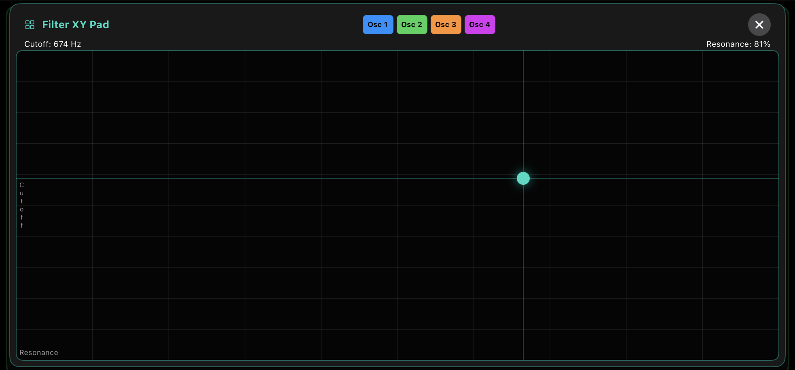
- X axis (left → right) — Filter Resonance, 0–100%. The response is finer at the low end, so you have more control over subtle resonance before it gets aggressive.
- Y axis (bottom → top) — Filter Cutoff, 20 Hz – 8 kHz. Mapped logarithmically so equal finger movement gives a perceptually even frequency sweep.
When you open the pad, the dot is positioned to reflect the current filter settings, so you can pick up exactly where the sound is. Drag (or tap) anywhere to jump or sweep — it responds to both.
Choosing which oscillators it controls
Because Marco's filters can be per-oscillator, the pad has Osc 1–Osc 4 selection buttons that decide which oscillators your touch drives. You can select any combination at once:
- A single oscillator — select just one and the pad sweeps only that oscillator's filter, leaving the others untouched. Great for carving one layer out of the mix while the rest hold steady.
- A group — select several and the pad moves all of their filters together from one touch.
- All four — select every oscillator for a full-voice filter sweep.
Tap a button to add an oscillator to the selection; tap it again to remove it. By default, Osc 1 is selected.
16App Preferences
App Preferences is where you control Marco's resource usage and check version information. It's organised into two sections: Performance Settings for managing CPU/DSP load, and App Information for version details and quick access to this user guide.
Opening App Preferences
Tap the cog icon (⚙️) in the top-right corner of the header. The App Preferences dialog opens; like the Scope, Preset Browser and Random Generator, it can be resized to fit the space available on your screen.
16.1 Performance Settings
Marco runs comfortably on every supported device with the default settings. Performance Settings exist mainly for AUv3 host situations — when you have many plugins loaded in your host and need to manage the total CPU/DSP load across the session.
Reverb Quality
The audible quality of the reverb depends on how many parallel delay lines it runs internally. More lines = denser, smoother reverb tail. Fewer lines = lighter CPU load.
| Setting | Internal lines | Character |
|---|---|---|
| Off | 0 (bypassed) | No reverb. Maximum CPU savings. |
| Light | 2 | Lo-fi, grainy reverb. Very low CPU. |
| Standard | 4 | Balanced reverb quality. Moderate CPU. |
| Full | 8 | Highest-quality reverb. Default. |
The default is Full. Reach for the lower tiers only when you're trying to claw back CPU in a busy AUv3 session, or if you specifically want the character of a sparser reverb.
When to lower Reverb Quality
Marco's defaults are designed to perform well across all supported devices. You typically only need to touch Performance Settings when:
- You're running Marco alongside many other AUv3 plugins inside a host, and the host's total DSP load is getting too high.
- You're stacking multiple instances of Marco in the same session.
- You want the deliberate character of a sparser reverb (Light or Standard) rather than the lush default.
16.2 App Information
The App Information section of App Preferences shows you which build of Marco you're running and gives you quick access to documentation.
Version & Build
Displays the current app version and build number. When you're reporting a bug or asking for help, please include both — it lets us pinpoint exactly which release you're on.
User Guide
A link to this user guide. Tapping it opens the Marco User Guide in your browser so you can look up any feature without leaving the app.
17Song Player (Standalone only)
The standalone app includes a built-in Song Player with 39 public domain melodies — a fast, fun way to hear how your current preset sounds playing real music, without setting up a host.
Pick a song, hit play, and Marco performs the melody using whatever preset you've got loaded. Switch presets while a song plays to A/B your sounds instantly.
How to use it
- Open the Song Player drawer at the bottom of the screen.
- Tap a song to select it.
- Use the Play / Stop control to start or stop playback.
- Adjust the Volume control to balance the song against anything else you're doing.
- Switch presets while a song is playing to compare sounds quickly.
Included songs
All 39 melodies are in the public domain:
| # | Song | Description |
|---|---|---|
| 1 | Waltzing Matilda | Australian folk anthem |
| 2 | Twinkle Twinkle | Classic nursery rhyme |
| 3 | Happy Birthday | Birthday celebration song |
| 4 | Brahms' Lullaby | Gentle lullaby by Brahms |
| 5 | Ode to Joy | Beethoven's Symphony No. 9 theme |
| 6 | Mary Had a Little Lamb | Simple nursery melody |
| 7 | London Bridge | English nursery rhyme |
| 8 | Jingle Bells | Christmas classic |
| 9 | Frère Jacques | French round ("Are You Sleeping?") |
| 10 | When the Saints | New Orleans jazz standard |
| 11 | Silent Night | Christmas carol |
| 12 | Row Your Boat | Simple round melody |
| 13 | Für Elise | Beethoven's famous piano piece |
| 14 | Scarborough Fair | English traditional ballad |
| 15 | Greensleeves | English folk song with verse and chorus |
| 16 | Amazing Grace | Hymn classic |
| 17 | Auld Lang Syne | New Year's traditional, with variation |
| 18 | Pachelbel's Canon | Baroque canon with faster variation |
| 19 | Beethoven's Fifth | Famous "Da da da daaaa" motif with development |
| 20 | Morning (Grieg) | Peer Gynt ascending E major theme |
| 21 | Danny Boy | Irish traditional ballad |
| 22 | Minuet in G | Bach's minuet, Parts A & B |
| 23 | Swan Lake Theme | Tchaikovsky ballet theme |
| 24 | Blue Danube | Strauss waltz theme |
| 25 | Moonlight Sonata | Beethoven's opening theme in C minor |
| 26 | Hall of Mountain King | Grieg's creeping chromatic ascent |
| 27 | Turkish March | Mozart's Rondo Alla Turca |
| 28 | Toccata & Fugue | Bach's D minor organ opening |
| 29 | Ride of Valkyries | Wagner's ascending B minor arpeggios |
| 30 | Habanera (Carmen) | Bizet's descending chromatic opera aria |
| 31 | Spring (Vivaldi) | Four Seasons Spring opening |
| 32 | Flight of Bumblebee | Rimsky-Korsakov's chromatic runs |
| 33 | Eine Kleine Nachtmusik | Mozart's serenade opening |
| 34 | Hungarian Dance 5 | Brahms' energetic dance |
| 35 | Clair de Lune | Debussy's dreamy piano melody |
| 36 | Sakura Sakura | Japanese traditional pentatonic |
| 37 | La Cucaracha | Mexican folk song |
| 38 | Kalinka | Russian folk song with faster section |
| 39 | William Tell Overture | Rossini's finale gallop |
MIDI input is fully supported in standalone — connect any USB or Bluetooth MIDI controller and play Marco directly.
18MIDI
Marco supports MIDI input in both the standalone app and the AUv3 plugin.
MIDI Input
The following MIDI messages are received:
- Note On / Note Off with full velocity sensitivity.
- Pitch bend.
- Modulation wheel.
- Sustain pedal (CC 64).
MIDI Learn
Marco's UI controls can be mapped to MIDI CC messages from a hardware controller, so you can drive parameters with knobs, faders and pads. MIDI Learn lets you assign any incoming CC to any mappable control.
MIDI Program Change
Switch presets remotely by sending MIDI Program Change messages. Useful in live performance for stepping through a set list from a foot controller, or for automating preset changes from a DAW.
MIDI Channel
Marco's MIDI input channel is configurable. Set it to Omni to listen on all channels, or restrict to a specific channel (1–16) when you need to keep multiple instruments separate.
20Tips & Workflow
Start from a preset, don't start from blank
Building a sound from scratch is slow. Roll the dice, find something you like, then modify. Even pros usually start from an existing patch.
Use Tweak more than Generate
Generate gives you a brand-new sound — useful for inspiration but easy to lose your direction. Once you have a promising starting point, switch to Tweak. You'll iterate faster and end up with sounds that feel intentional.
Cycle DUAL HARD SYNC to find unique textures
Most people leave sync alone. Don't. After you've found a sound, tap the DUAL HARD SYNC button 5–10 times — you'll often discover a variation more interesting than the original.
Pay attention to the white LFO indicators
When you can't tell what's making a parameter move, look for the moving white line inside the slider. It's showing you exactly what an LFO is doing in real time — invaluable when sounds get complex.
Use linked mode when you're learning
Per-oscillator everything gets overwhelming fast. When you're learning, start with most modules in linked mode (one envelope drives all four oscillators) and only break individual modules out to per-osc when you need that specific control.
Keep the Scope open
The Scope teaches you what each waveform actually sounds like by showing it visually. After a few sessions you'll start predicting what changes will do before you make them — that's when sound design starts to feel intuitive.
21Troubleshooting
I can't hear anything
- Check the master Output meter at the top of the Master tab — is it moving when you play?
- Check the Output Gain isn't at zero.
- Make sure at least one oscillator is ON and its Vol slider is above zero.
- Check the Master tab — make sure the Limiter Ceiling isn't pulled all the way down, and that no effect with a low Mix is bypassing your signal.
- If using AUv3, check that the host's track is unmuted and routed correctly.
The DSP percentage is high
Marco runs comfortably on iPad with the default settings, so high DSP usually means your AUv3 host has a lot loaded into it. In order of impact:
- Open App Preferences (cog icon) and drop Reverb Quality a tier — Full → Standard, or Standard → Light. The difference is most noticeable on long reverb tails.
- Turn OFF any oscillators you're not using. An off oscillator consumes no CPU.
- On the Master tab, turn off any sections you're not actually using (Drive, Compressor, Delay, Reverb, Limiter). Bypassed sections cost almost nothing.
- Heavy modulation (multiple LFOs at fast rates, all running per-oscillator) adds up. Where it doesn't change the sound, run LFOs in linked mode.
- If your host gives you control, raising the audio buffer size also gives more headroom (at the cost of slightly more latency).
MIDI isn't being received
- Check your controller is connected (USB or Bluetooth) and sending MIDI — most controllers have an activity LED.
- In standalone, confirm Marco's MIDI Channel matches the channel your controller sends on (or set it to Omni).
- In AUv3, make sure the host has routed MIDI to Marco's track.
22Getting Help
Questions, bug reports, feature requests — head to the Support page. We aim to reply within 1–2 business days.
For privacy questions, see the Privacy Policy.
Thanks for using Marco.